Inverting the Bellman Equation:
From $Q$-Values to World Models
- Alistair Letcher
- Mattie Fellows
- Alexander Goldie
- Jonathan Richens
- Jakob Foerster
- Oliver Richardson

TLDR: We prove that model-free agents trained on a sufficiently rich set of reward functions, e.g. using goal-conditioned RL, implicitly encode a unique world model (WM) in their $Q$-values. We introduce $P$-learning to extract this WM in practice, and show that agents trained on just a handful of goals encode accurate dynamics in
Reacher,MountainCar, and stochasticFourRooms, even over variables that rewards never directly depend on. Surprisingly, policies trained exclusively on aReacheragent's implicit WM are quasi-optimal on velocity-based goals despite position-only training.
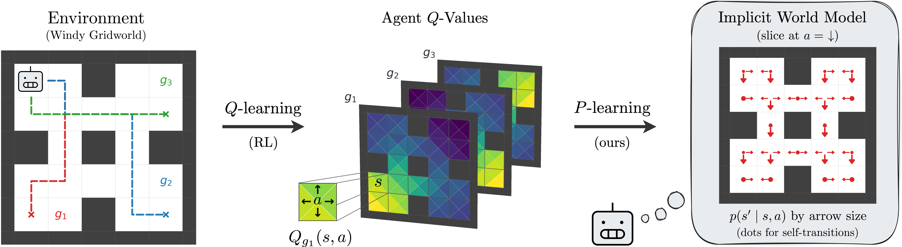
Overview
The value functions typically learnt by model-free agents are intrinsically tied to policies and reward functions, making it challenging to interpret what they understand of the world (as separate from what they value). In general, distinct worlds (transition kernels) can give rise to identical value functions, an obstacle formalised as the value equivalence problem. $\newcommand{\cS}{\mathcal{S}} \newcommand{\cA}{\mathcal{A}} \newcommand{\cG}{\mathcal{G}} \newcommand{\cT}{\mathcal{T}} \newcommand{\E}{\mathbb{E}} \newcommand{\eq}{:=} \newcommand{\om}{\omega}$
This raises the question:
When do model-free agents encode an accurate model of their environment?
We hypothesise that agents trained on a sufficiently rich set of goals — e.g. via goal-conditioned RL (GCRL), successor features, or forward-backward learning — implicitly learn a unique world model. Taking GCRL as the broader framework for agents trained on goals parameterised by arbitrary reward functions, our work makes three contributions to test this hypothesis and bridge model-based, model-free and goal-conditioned RL.
- Methodologically, we introduce $P$-learning, an inverse analogue to $Q$-learning: instead of iteratively updating value estimates for a fixed environment, $P$-learning updates a candidate WM to be consistent with fixed value functions, effectively inverting the Bellman equation. We make this precise by proving that tabular $P$-learning converges to a closed-form expression involving the Moore-Penrose pseudo-inverse.
- Theoretically, we prove conditions on the families of reward functions for which value equivalence is broken, i.e. for which $P$ is uniquely determined by $Q$-values. Our results demonstrate that GCRL can bridge model-free and model-based RL, with $Q$-values (paired with rewards) becoming informationally equivalent to the kernel $P$.
- Empirically, we show that agents trained with a handful of goals often contain accurate WMs, even in continuous spaces like
Reacher, and even over variables that rewards never directly depend on. Surprisingly, this transfers to near-optimal planning (exclusively inside the WM) for out-of-distribution goals, including reaching specific angular velocities despite position-only training. We analyse theseimplicit generalisation capabilities
inMountainCar, revealing that agents with widely different objectives can secretly encode similar models. Finally, we identify a strong correlation (Spearman $\rho = 0.98$) between an agent's performance and the accuracy of its internalised WM, suggesting that GCRL is an implicitly hybrid method linking model-free and model-based RL.
$P$-learning: extracting world models from $Q$-values
Our starting point is a simple symmetry. The (goal-augmented) Bellman operator for a fixed policy $\pi$ is given by
$$ \mathcal{T}^\pi_{P}(Q)(s, a, g) = \mathbb{E}_{s' \sim P(s,a),\,a'\sim\pi(s',g)}\bigl[\,r(s', g) + \gamma\, Q(s', a', g)\,\bigr] \,, $$
making explicit the dependence of $\cT^\pi_P$ on the kernel $P$. While $Q$-learning treats $P$ as fixed and searches for a value function $Q$ that satisfies $\mathcal{T}^*_P(Q) = Q$, we consider the inverse problem of extracting an internal
model $P^\star$ of the environment from a fixed agent with goal-conditioned $Q$-values, policy $\pi$, and known reward function $r$. The guiding observation is that a model $P_\phi$ satisfying the Bellman equation $\cT^\pi_{P_\phi}(Q) = Q$ is compatible with the agent's behavior, and may thus be viewed as (one possible) subjective belief of the agent about the environment. A natural objective to extract such a model is therefore to minimise the Bellman residual
$$ \mathcal{L}(\phi) = \bigl\| \mathcal{T}^\pi_{P_\phi}(Q) - Q \bigr\|_d^2 $$
with respect to $\phi$, for some reference distribution $d \in \Delta(\cS \times \cA \times \cG)$, e.g. induced by an exploration policy. We call this $P$-learning. Defining the TD estimate $\hat\delta_\phi(s,a,g,s',a') \eq r(s',g) + \gamma Q(s',a',g) - Q(s,a,g)$, we prove under regularity assumptions that the gradient is given by
$$ \nabla_\phi \mathcal L = \E_{g,s,a,s',a'}\bigl[\delta_\phi \hat\delta_\phi \nabla_\phi \log P_\phi(s'|s,a)\bigr] \,, $$
where $(s,a,g) \sim d$ and $s' \sim P_\phi(s, a), a' \sim \pi(s', g)$. For finite MDPs, we can show that the Bellman equation becomes a set of linear systems $M\,P_\phi(s,a) = Q(s,a)$, where $M_{lk} := r(s'_k, g_l) + \gamma V(s'_k, g_l)$, and we prove (Theorem 1) that tabular $P$-learning converges, for any learning rate $0 < \alpha < 2/\sigma_{\max}^2(M)$, to$$ P_\infty(s,a) = M^{+}\, Q(s,a) + \bigl(I - M^{+}M\bigr)\, P_0(s,a)\,, $$
where $M^{+}$ is the Moore–Penrose pseudo-inverse. This reveals a key condition under which value equivalence can be broken: if $M$ has full rank, the second term vanishes and the iteration converges to a unique solution $M^+Q$, with $M^{+}$ acting as an inverse Bellman map from values back to dynamics (note that $M^+ = M^{-1}$ when $M$ is square). If $Q$-values are moreover exact, i.e. satisfy $\cT_P(Q) = Q$, then $P$-learning converges to the true kernel $P\,$!
$P$-learning — Pseudocode
Theory: when is $P$ uniquely determined by $Q$?
While $P$-learning enables the efficient extraction of WMs, the resulting kernel may not be determined uniquely (e.g. if $M$ is rank-deficient in the setting above). We provide conditions under which agents break this degeneracy when $Q$-values are exact, with tight error bounds when they are approximate. Four regimes emerge for stochastic/deterministic kernels and finite/continuous state spaces. Indicator rewards are defined by $r(s,g) = \delta_{sg}$ in finite $\cS$ or $r(s,g) = \mathbf{1}[\|s-g\| \leq \sigma]$ with $\sigma > 0$ in continuous $\cS\,$; Gaussian rewards are given by $r(s,g) = e^{-\|s-g\|^2/2\sigma^2}$.
Conditions on $(\cG, r)$ under which environment dynamics are uniquely determined by $Q$-values.
| State space $\cS$ | Deterministic $P$ | Stochastic $P$ | Reward $r$ |
|---|---|---|---|
| Finite $\cS$ | $|\cG| \geq 1$ | $|\cG| \geq |\cS|$ | Generic |
| $|\cG| \geq 1$ | $|\cG| \geq |\cS|$ | Gaussian | |
| $|\cG| \geq |\cS|$ | $|\cG| \geq |\cS|$ | Indicator | |
| Continuous $\cS \subseteq \mathbb{R}^d$ | if †‡ then $|\cG| \geq 2d+1$ else $|\cG|$ large (finite) | $\cG$ non-empty interior‡ | Gaussian |
| $\cG \supseteq \cS + B_\sigma(0)$ | $\cG \supseteq \cS + B_\sigma(0)$‡ | Indicator |
† For real-analytic value functions. ‡ For unconditional policies.
Taken together, our results show that methods like GCRL can bridge model-free and model-based RL, with the collection $(Q_g, \pi_g, r_g)_{g \in \cG}$ becoming informationally equivalent to the kernel $P$ when $\cG$ is sufficiently rich. Note that policies are most often induced by $Q$-functions via $\text{argmax}$ or $\text{softmax}$, so $(Q_g, r_g)$ is typically sufficient in practice. Moreover, our results make no assumptions on policy optimality: only $Q$-value accuracy is required.
Experiment (Reacher): beyond theoretical guarantees
We train a goal-conditioned PQN agent on MuJoCo Reacher with only $|\mathcal{G}|=4$ sparse goals at the cardinal positions $\{(\pm 1, 0), (0, \pm 1)\}$, and extract its implicit WM with $P$-learning. We visualise the agent's return, $Q$-values and extracted WM over the course of training in the animation below. Despite imperfect $Q$-values (normalised MSE $=5.7\cdot10^{-1}$), the WM matches ground-truth dynamics with high fidelity (NMSE $=1.2\cdot10^{-4}$).
Top row: agent return on training goals, MSE of world model (WM) extracted via $P$-learning, and return of policies planned inside the WM on unseen goals. Bottom row: slice of the learnt $Q$-values, implicit WM, and policy rollouts, all shown vs ground truth.
Agent return. Discounted return of the Reacher agent on four training goals (fingertip targets at unit distance in the four cardinal directions), with the exponentially weighted average return in black.
World-model error. Mean-squared error between the extracted world model and the true transition kernel. The world model implicitly encoded by the agent becomes more accurate as the agent becomes more capable.
Unseen-goal return. Return of policies trained exclusively inside the extracted world model, evaluated on three out-of-distribution goals: target velocity (unseen goal 1), target angle (unseen goal 2), and distant fingertip (unseen goal 3).
$Q$-value slice. Learnt $Q$-values $Q_g(\theta,\omega,a)$ during training, against optimal $Q$-values, sliced at $g = (0, 1)$, $a = (1,1)$, $\omega = (1, -1)$. The normalised MSE between learnt and optimal $Q$-values is $5.7 \times 10^{-1}$ at the end of training.
World-model slice. Extracted world model $P(\theta,\omega,a)$ versus true kernel, sliced at $a = (1,1)$, $\omega = (1, -1)$. Despite imperfect $Q$-values (normalised MSE $= 5.7 \cdot 10^{-1}$), the implicit WM is highly accurate (normalised MSE $= 1.2 \cdot 10^{-4}$).
Policy rollouts. Trajectories of the optimal goal-conditioned policy, rolled out using extracted world model (solid) versus true kernel (dashed), for the four training goals, from a fixed starting point.
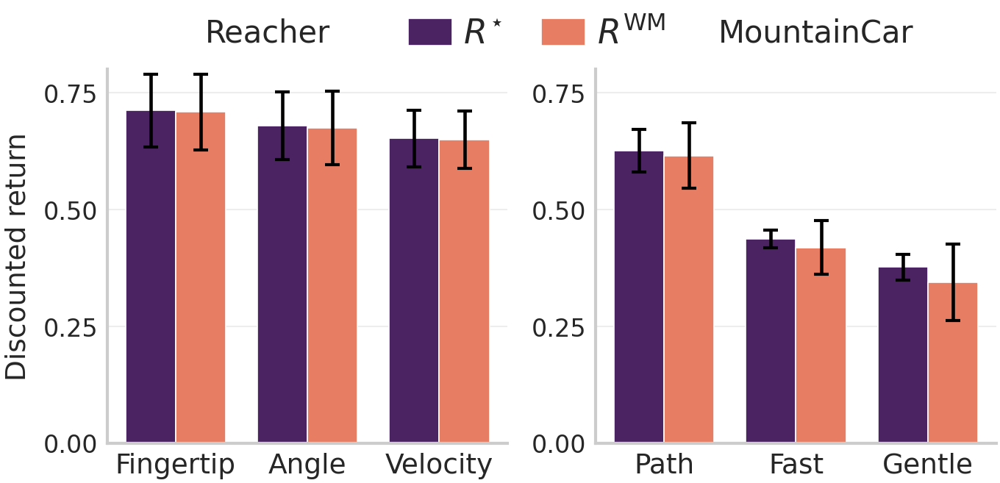
Left: Discounted return of optimal $(R^\star)$ vs WM-trained $(R^{\text{WM}})$ policies on three unseen goals each. Mean $\pm$ SE over 10 seeds and 512 resets. WM-derived policies are quasi-optimal on every out-of-distribution task.
To further validate accuracy, we train policies inside the extracted WM for three unseen goals increasingly far from the training distribution: (i) far fingertip: reach fingertip position $(x, y) = (\sqrt{2}, \sqrt{2})$, which is twice as far as any training goal; (ii) target angle: reach joint configuration $\theta = (0, \pi)$, noting that distinct angle configurations can give the same fingertip position; and (iii) target velocity: reach velocity $\om = (2, 2)$, where $\omega$ covers a different dimension as the training goals. Despite the agent being trained on exclusively position-based goals, the WM-learnt policy is quasi-optimal on all three tasks, as shown in the bar plot, revealing implicit generalisation capabilities.
Finally, we test whether better agents have better implicit world models by sweeping over architecture capacity. We plot agent return, MSE of the extracted WM, and return of a WM-trained policy on unseen goals, against capacity in the figure below. The Spearman correlation coefficients between agent return and WM error, and agent return and WM-policy return on unseen goals, are $\rho = -0.98$ with 95% confidence interval $[-0.99, -0.95]$, and $\rho = +0.95$ $[+0.89, +0.97]$, suggesting that performance and implicit generalisation are tightly coupled.
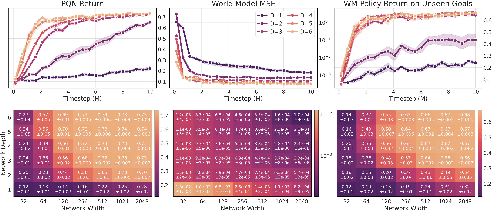
Top: agent return, WM error, and WM-policy return on unseen goals over training, for fixed width $W = 512$ and increasing $Q$-network depth $D$. Bottom: the same three metrics as heatmaps over all widths and depths at the end of training. More capacity $\Rightarrow$ better agent and better implicit WM.
Experiment (MountainCar): agents with different goals secretly agree
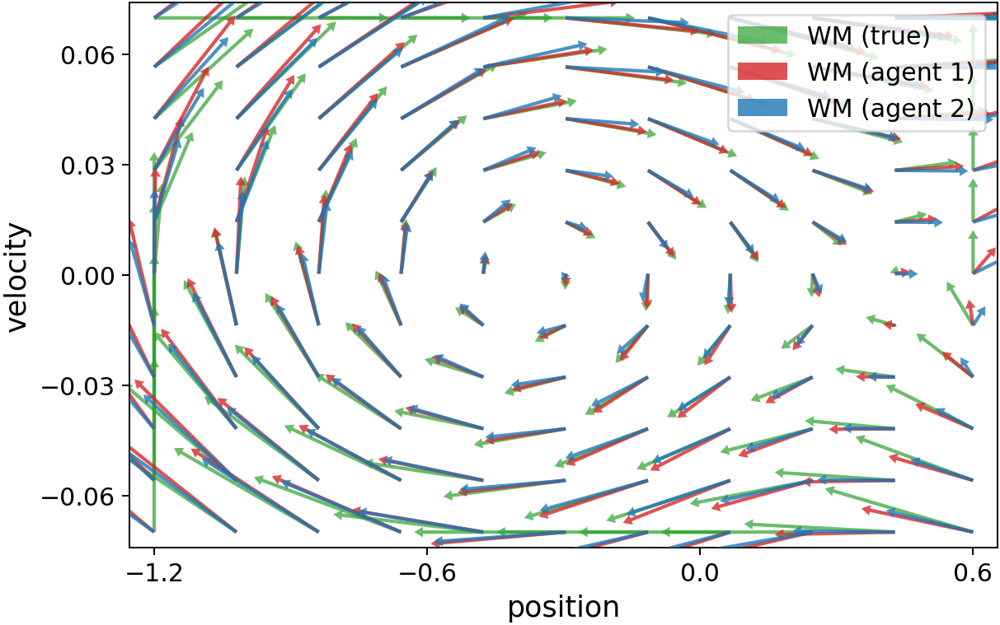
Left: Quiver plots of WMs extracted from two agents trained with position- and velocity-based goals vs ground truth, for $a = \text{right}$. Each arrow starts from a state $s$ and points to the predicted or true next-state $s' = P(s,a)$.
Digging deeper, we repeat the same experiment in Mountaincar, and then train a second agent with 4 velocity-based goals. The resulting implicit WMs are near-identical (NMSE $= 1.7\cdot10^{-4}$), and ~42 times closer to each other than to the true kernel (NMSE $= 7.2\cdot10^{-3}$), as illustrated in the quiver plot to the right. This leads us to formulate an informal local-global
hypothesis left for future exploration: value-based agents, trained to predict returns on a small number of local reward functions (i.e. defined on a subset of variables), tend to encode an accurate world model over all dependent environment variables.
Experiment (FourRooms): more stochasticity, more goals
To validate our theoretical results for stochastic environments, and assess the number of goals required in practice, we run experiments on three increasingly stochastic variants of the classic FourRooms gridworld. In each case we plot (left) the extracted world-model MSE as a function of training timestep, for increasing $|\cG|$. We also plot (right) the policy obtained by planning inside the extracted WM (solid) vs the optimal policy (dashed), for two out-of-distribution goals specified by reaching a given state without walking onto unsafe states.
Deterministic — $|\mathcal{G}| = 1$ suffices
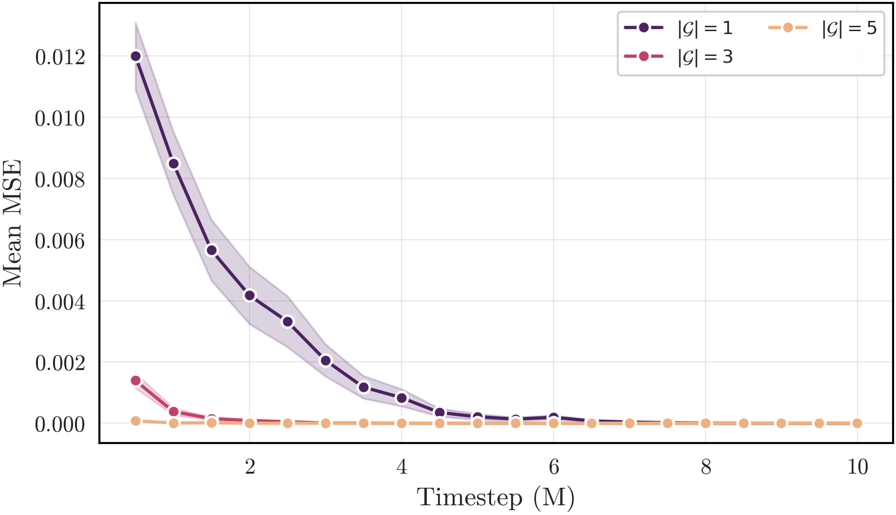
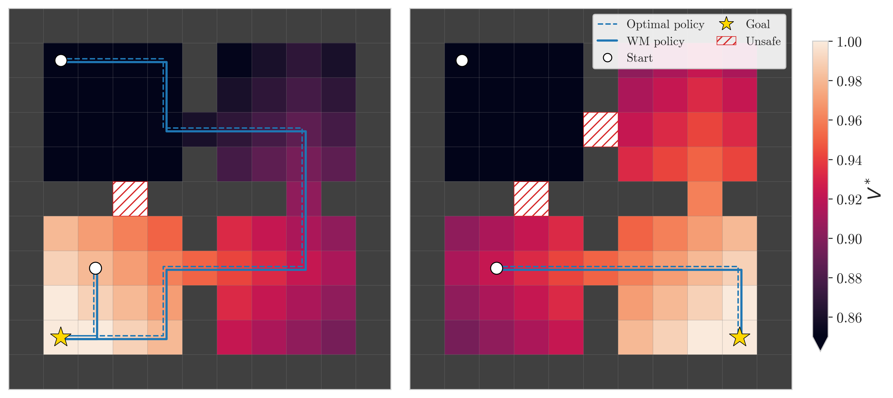
Left: A single generic goal (reward function perturbed with uniform noise at initialisation) drives the extracted WM to zero error during training. Right: optimal (dashed) vs WM-derived (solid) policy on two out-of-distribution goals. They coincide exactly, in line with our theorem (deterministic $P$, finite $\cS$).
Windy (local stochasticity) — $|\mathcal{G}| = 4$ suffices
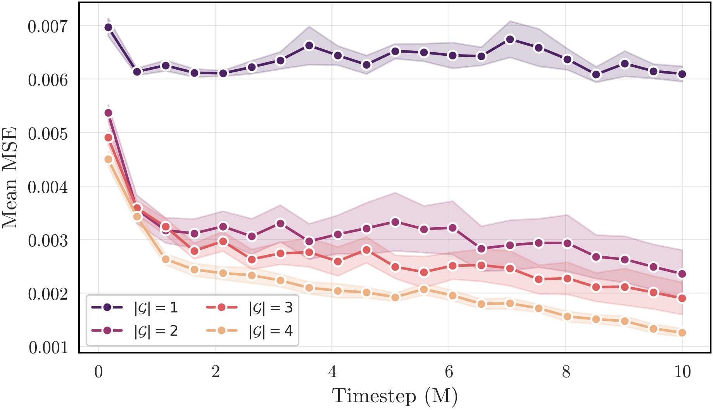
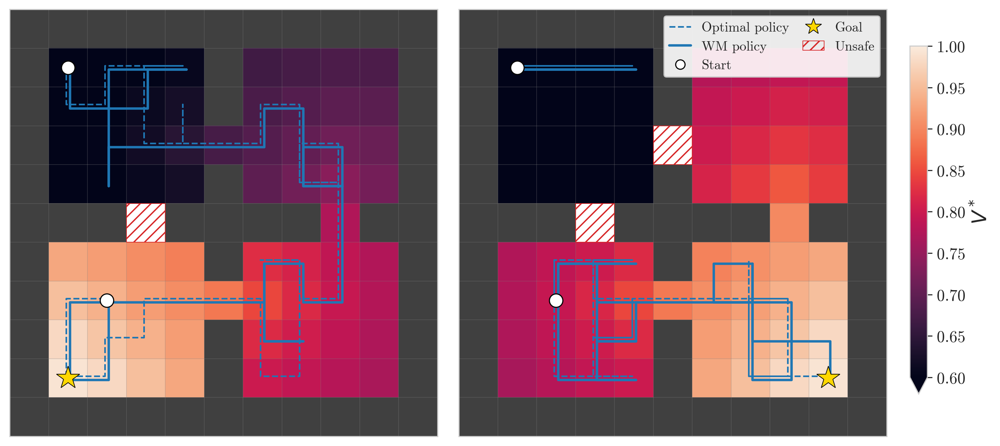
The windy variant realises the intended action w.p. $\tfrac{1}{2}$ and rotates it 90° either way w.p. $\tfrac{1}{4}$ each. The single-goal regime is no longer sufficient for stochastic dynamics, but for $|\mathcal{G}| = 4$, the optimal (dashed) vs WM-derived (solid) policies on OOD goals have returns matching to within a few percent.
Teleporting (full stochasticity) — $|\mathcal{G}| = 20$ suffices
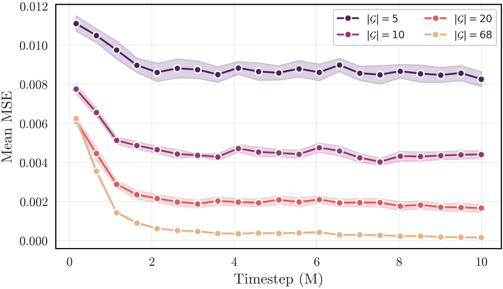
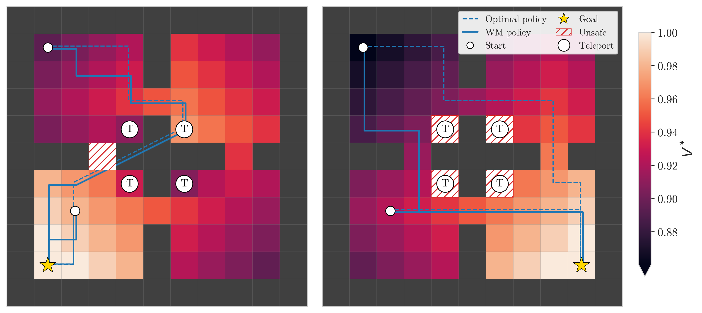
In the teleporting variant, four cells (marked T) re-emit the agent uniformly into the diagonally-opposite room. For $|\mathcal{G}| = 20$, the extracted WM is almost perfect, again producing quasi-optimal policies on OOD goals, well below the worst-case theoretical bound $|\mathcal{G}| \geq |\mathcal{S}| = 68$.
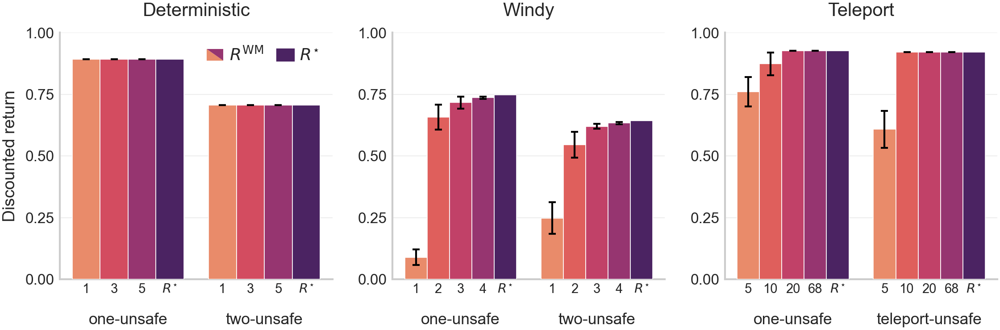
Mean return $\pm$ SE (10 training seeds), for WM-trained $(R^\text{WM})$ vs optimal $(R^\star)$ policies, on two unseen goals, in each FourRooms variant, for varying number of training goals $|\cG|$ on the $x$-axis.
Takeaways
- Model-free agents that learn $Q$-values implicitly carry, in decodable form, a model of the world.
- $P$-learning provides a concrete algorithm for inverting the Bellman equation: $(Q, \pi, r) \mapsto P$.
- These internalised world models are often highly accurate, even for agents trained on a handful of goals, inducing implicit generalisation capabilities via zero-shot planning for out-of-distribution goals — including over variables the training reward functions never directly depend on.
- Our results take a first step in bridging model-based, model-free, and goal-conditioned RL: when model-free agents are trained on a sufficiently rich set of goals, they implicitly contain a unique and accurate world model. We hope this will inspire interpretability and auditing tools based on implicit world models, to help ensure that agents can efficiently be repurposed when trained using reward functions that are, inevitably, misspecified.
Citation
The website template was borrowed from Easy Academic Website Template.